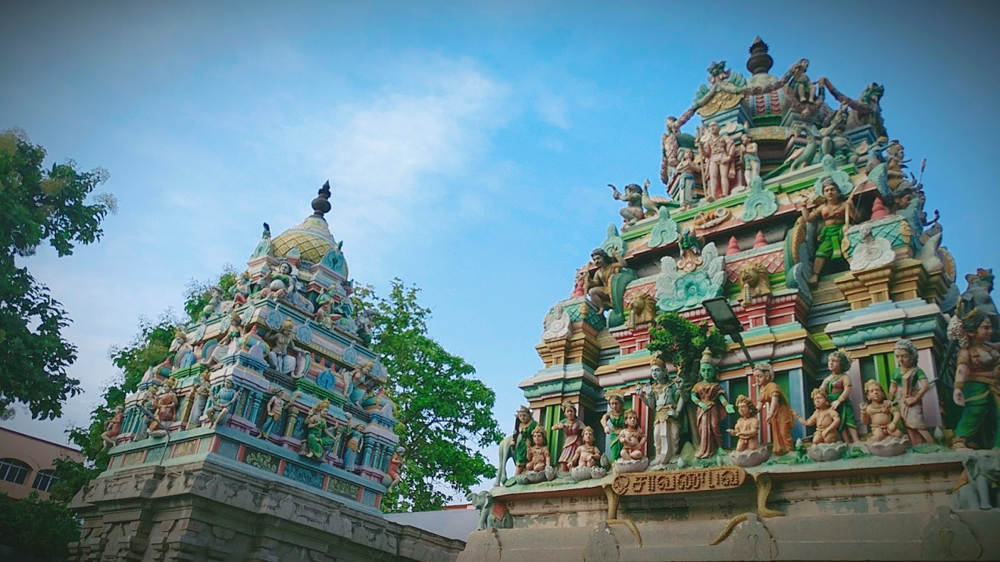

Explore The
Unexplored!!
Eachanari Vinayagar Temple, Coimbatore
Eachanari Vinayagar Temple, located about 12 km from Coimbatore on National Highway 209, is one of the most revered temples dedicated to Lord Vinayagar (Ganesha). Dating back to the 16th century, the temple's origin is linked to a legend where a massive 6-foot-tall and 3-foot-wide Ganesha idol, originally meant for the Pateeswarar Temple in Perur, became immovable at Eachanari, leading to the temple’s establishment at this divine location. The temple showcases exquisite Dravidian architecture, featuring a beautifully adorned sanctum, an intricately carved gopuram, and a striking gold-plated idol of Lord Vinayagar, which enhances its divine presence. The temple is renowned for its daily rituals and special poojas, with thousands of devotees visiting every day to seek the blessings of Lord Vinayagar, believed to be the remover of obstacles and the harbinger of success. Major festivals such as Vinayaka Chathurthi, Thaipoosam, Deepavali, Tamil New Year, Saraswathi Pooja, and Karthika Deepam are celebrated with grandeur, including elaborate homams, abhishekams, alangarams, and deepa aradhanai. The temple also offers facilities for conducting special poojas, wedding ceremonies, and anna dhanam (free food distribution) for devotees. Additionally, the temple has a well-maintained meditation hall, a book stall selling spiritual texts, and a prasadam counter where devotees can purchase laddus and other offerings. The temple’s management ensures cleanliness and a peaceful atmosphere, making it a spiritually uplifting destination. With its serene ambiance, divine energy, and deep-rooted history, Eachanari Vinayagar Temple stands as one of the most significant and powerful Ganesha temples in Tamil Nadu, attracting devotees and tourists seeking prosperity, success, and inner peace.

Maruthamalai Murugan Temple
Maruthamalai Murugan Temple, also known as Arulmigu Subramaniyaswamy Temple, is a revered 12th-century hill temple located about 12 km northwest of Coimbatore, Tamil Nadu, perched at an elevation of 500 feet on the Western Ghats. Dedicated to Lord Murugan, the Hindu god of war, it is one of his six sacred abodes (Arupadai Veedu) and has deep historical roots dating back to the Sangam period. The temple is renowned for its stunning Dravidian architecture, featuring an intricately carved gopuram, vibrant sculptures, and a majestic black granite idol of Lord Murugan. It is closely associated with the Tamil Siddhar saint Pambatti Siddhar, who meditated in a cave here, and devotees visit his shrine for spiritual blessings. The temple’s sacred springs, Maruda Theertham and Skanda Theertham, are believed to have medicinal and purifying properties. Major festivals like Thai Poosam, Panguni Uthiram, and Skanda Sashti are celebrated with grandeur, attracting thousands of devotees who partake in processions, abhishekams, and special poojas. A unique feature of the temple is the Viboothi Siddhar Temple located on the way up, where devotees receive sacred ash (viboothi) with spiritual significance. The temple provides free prasadam and has an anna dhanam (free food distribution) hall serving thousands of pilgrims daily. Visitors can reach the temple via a scenic uphill trek, a well-maintained roadway, or a special temple-operated bus service. The temple is open daily from 6:00 AM to 1:00 PM and from 2:00 PM to 8:00 PM, offering a mesmerizing spiritual experience amidst the lush green surroundings. With its divine energy, rich history, and breathtaking views of the Coimbatore plains, Maruthamalai Murugan Temple remains one of Tamil Nadu’s most prominent pilgrimage destinations, attracting devotees seeking blessings, prosperity, and inner peace.

Perur Pateeswarar Temple
Perur Pateeswarar Temple, an ancient and revered Shiva temple, is located on the banks of the Noyyal River, about 7 km west of Coimbatore, Tamil Nadu. Believed to have been built by the Cholas over 1,500 years ago, the temple is dedicated to Lord Pateeswarar (a form of Lord Shiva) and his consort, Goddess Pachainayaki. Renowned for its magnificent Dravidian architecture, the temple features intricately carved stone pillars, a grand rajagopuram (entrance tower), and the Kanaka Sabha, a stunning hall with detailed sculptures depicting celestial beings, mythological scenes, and Lord Shiva’s cosmic dance. The temple houses a self-manifested (swayambhu) Shiva Lingam and a sacred golden statue of Nataraja in the Kanaka Sabha, where Shiva is worshipped as the divine cosmic dancer. The temple is also associated with Saint Sundarar, one of the Tamil Shaivite Nayanmars, and is mentioned in various Tamil literary works, highlighting its deep historical and religious significance. Devotees believe that performing last rites at this temple ensures moksha (liberation of the soul). Major festivals like Maha Shivaratri, Panguni Uthiram, Arudra Darshan, and Aadi Perukku are celebrated with grandeur, attracting thousands of pilgrims. The temple complex also has a sacred pond, Thirthakulam, where devotees take ritual baths before worship. It is open daily from 5:30 AM to 1:00 PM and from 4:00 PM to 8:30 PM, offering a serene and spiritually uplifting experience. With its rich cultural heritage, divine ambiance, and spiritual significance, Perur Pateeswarar Temple remains one of the most important and historic Shiva temples in Tamil Nadu, drawing devotees, historians, and architecture enthusiasts from across the country.
.jpeg)
Koniamman Temple
Koniamman Temple, one of the oldest and most revered temples in Coimbatore, Tamil Nadu, is dedicated to Goddess Koniamman, a powerful form of Goddess Shakti and the city’s guardian deity. Believed to have been built over 600 years ago by the rulers of the Kongu Chola dynasty, the temple stands in the heart of the city and is an important spiritual and cultural landmark. Originally situated near Perur, it was later relocated to its present location by the Mysore rulers. The temple features classic Dravidian architecture with a grand rajagopuram (entrance tower), beautifully sculpted pillars, and a sanctum housing the majestic idol of Goddess Koniamman, adorned in silk and jewels. The deity is worshipped for protection, prosperity, health, and success, and devotees believe that offering prayers here removes obstacles in life. The temple is especially crowded during major festivals like Aadi Perukku, Navaratri, Pongal, and Tamil New Year, when grand processions, special abhishekams, cultural performances, and devotional music take place. A sacred pond within the temple complex is believed to have healing properties, and devotees often take a dip before offering prayers. The temple also provides free prasadam and conducts anna dhanam (free food distribution) daily. Another unique feature is the worship of the snake deity (Naga Devatha) within the premises, attracting devotees seeking relief from naga dosham (serpent-related astrological afflictions). Open from early morning to late evening, Koniamman Temple continues to be a symbol of divine grace and strength, drawing devotees, historians, and tourists seeking blessings, spiritual solace, and a glimpse of Coimbatore’s rich religious heritage.
.jpeg)
Kottai Eswaran Temple
Kottai Eswaran Temple, one of the most ancient and revered Shiva temples in Coimbatore, Tamil Nadu, is located near the city’s fort area and is believed to have been built during the rule of the Nayak kings. Dedicated to Lord Eswaran (a form of Lord Shiva), the temple is known for its rich history, spiritual significance, and Dravidian-style architecture, featuring an intricately carved rajagopuram (entrance tower), beautifully sculpted pillars, and a sanctum housing a sacred Shiva Lingam. The temple is famous for its Maha Shivaratri celebrations, where thousands of devotees gather for night-long prayers and abhishekams. Other major festivals such as Pradosham, Arudra Darshan, and Panguni Uthiram are also celebrated with great devotion. Devotees believe that praying at Kottai Eswaran Temple brings peace, prosperity, and relief from life’s difficulties. The temple also has shrines for Goddess Parvati, Lord Ganesha, Lord Murugan, and Navagrahas (nine planetary deities), making it a significant center for Hindu worship. Rituals like Rudrabhishekam and special poojas attract devotees seeking divine blessings. The temple has a sacred theertham (holy water tank), believed to have purifying properties and used for rituals. Additionally, it plays a vital role in the local community by organizing charity events, free food distribution, and spiritual discourses, strengthening its place as a cultural and religious landmark in Coimbatore. Open from early morning to evening, Kottai Eswaran Temple stands as a spiritual gem in Coimbatore, offering devotees a divine experience filled with faith, tradition, and centuries-old heritage.
